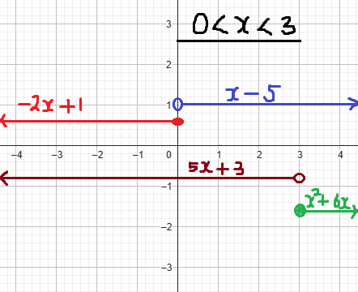

For ACT Students
The ACT is a timed exam...60 questions for 60 minutes
This implies that you have to solve each question in one minute.
Some questions will typically take less than a minute a solve.
Some questions will typically take more than a minute to solve.
The goal is to maximize your time. You use the time saved on the questions you
solve in less than a minute, to solve the questions that will take more than a minute.
So, you should try to solve each question correctly and timely.
So, it is not just solving a question correctly, but solving it correctly on time.
Please ensure you attempt all ACT questions
There is no negative penalty for a wrong answer.
Solve all questions
Show all work
(1.) ACT The function $f(x)$ is defined below. What is the value of $f(-1)$?
Which "piece(s)" should be used to find the y-intercept?
To find the y-intercept, set x to zero and solve for y x is zero in the domain of the first piece because 0 < 3
So, only the first piece: 6x − 5 should be used to find the y-intercept.
(3.) ACT The DigiPhone Company advertises the following calling plans:
DigiPhone Calling Plans
600 minutes* for $89.99** per month
1,000 minutes* for $119.99** per month
1,400 minutes * for $149.99** per month
*The charge for each additional minute is $0.20**
**Taxes are NOT included.
Luis chose the $149.99 plan.
There are certain months when he uses more than 1,400 minutes of calling time.
For a month in which he uses x minutes of calling time, where x is an integer greater than
1,400, which of
the following expressions gives the amount, in dollars, of his bill before any taxes are added?
(5.) ACT The table below shows an electric utility company's old and new rates.
In the table, $kWh$ stands for kilowatt-hour, a standard unit for measuring electrical energy.
Reunion Electric Association Rates
Old rate
New rate
Monthly service charge
$\$7.00$
$\$11.00$
Energy-use charge
first $1,500$ kWh
$6.6¢/kWh$
$6.7¢/kWh$
$kWh$ over $1,500$
$6.2¢/kWh$
$6.2¢/kWh$
LaTasha is a computer programmer for the electric company. She updated the program for calculating
customers' monthly bills. Which of the following is an expression that uses the new rates to calculate
the
bill, in dollars, of a customer who uses $x\: kWh$ of electricity during the month, where $x \gt 1,500$?
(6.) ACT The cheerleading squad wants to purchase new uniforms to wear at the regional
championship competition.
They decide to sell candy bars for the $1.00 each
The squad will receive $0.40 for each of the first 200 candy bars sold.
For each of the next 300 sold, the squad will receive $0.50
For each additional candy bar sold, the squad will receive $0.60
How many candy bars must the squad sell to reach their goal of rasing $350.00?
(7.) In March 2014, a gas company had the rate schedule shown below for natural gas usage in
single-family residences. Monthly service charge $21.45
Delivery charge
First 40 therms
$0.94317/therm
Over 40 therms
$0
Natural gas cost
First 40 therms
$0.3709/therm
Over 40 therms
$0.5138/therm
(a.) What is the charge for using 30 therms in a month?
(b.) What is the charge for using 200 therms in a month?
(c.) Develop a function that models the monthly charge C for x therms of gas.
(a.)
Delivery charge: 30 therms falls in the 1st piece
Natural gas cost: 30 therms falls in the 1st piece
$
Monthly\;\;service\;\;charge = \$21.45 \\[3ex]
Delivery\;\;charge: = 0.94317(30) = \$28.2951 \\[3ex]
Natural\;\;gas\;\;cost: = 0.3709(30) = \$11.127 \\[3ex]
C(x) = 21.45 + 28.2951 + 11.127 = 60.8721 \\[3ex]
C(x) \approx \$60.87 \\[3ex]
$
(b.)
Delivery charge and Natural gas cost: 200 therms falls in the 2nd piece
However:
But, 40 therms from it goes to the 1st piece (maximum limit for the 1st piece)
Remaining 160 (200 − 40) therms goes to the 2nd piece
$
Monthly\;\;service\;\;charge = \$21.45 \\[3ex]
Delivery\;\;charge: = 0.94317(40) + 0(160) = 37.7268 + 0 = \$37.7268 \\[3ex]
Natural\;\;gas\;\;cost: = 0.3709(40) + 0.5138(160) = 14.836 + 82.208 = \$97.044 \\[3ex]
C(x) = 21.45 + 37.7268 + 97.044 = 156.2208 \\[3ex]
C(x) \approx \$156.22 \\[3ex]
$
(c.) The monthly cost (monthly service charge and delivery charge and natural gas cost): C
depends on the amount of natural gas used: x
The monthly cost is the dependent variable
The natural gas usage is the independent variable
We write that: C = f(x) or preferably as: C(x)
To write the piecewise function, begin with the domains
The domain for the first piece should be natural gas usage from 0 to 40 therms: 0 ≤ x ≤
40
The domain for the second piece should be any natural gas usage over 40: x ≥ 40
Next: we write the function for each piece.
First Piece: In the first example, replace 30 with x
Second Piece: In the second example, replace 160 (200 − 40) with x − 40
(8.) ACT A function P is defined as follows:
for $x \gt 0$, $P(x) = x^5 + x^4 - 36x - 36$
for $x \lt 0$, $P(x) = -x^5 + x^4 + 36x - 36$
What is the value of $P(-1)$?
(9.) A trucking company transports goods between two cities that are 960 miles apart.
The company charges, for each pound, $0.55 per mile for the first 100 miles,
$0.40 per mile for the next 300 miles, $0.30 per mile for the next 400 miles,
and no charge for the remaining 160 miles.
Develop the piecewise function for the mileage costs.
Let: m = the mileage (number of miles) C(m) = cost per mile (mileage rate)
(11.) The wind chill factor on a certain planet is given by the following formula, where v is
the wind speed (in meters per second) and t is the air temperature (°C)
$
W =
\begin{cases}
t; \hspace{15.5em} 0 \le v \lt 1.78 \\[3ex]
33 - \dfrac{(10.43 + 10\sqrt{v} - v)(33 - t)}{22.04}; \hspace{10mm} 1.78 \le v \le 25 \\[5ex]
33 - 1.5957(33 - t) \hspace{7.8em} v \gt 25
\end{cases}
$
(a.) Find the wind chill for an air temperature of 5°C and a wind speed of 0.5 m/sec.
Round to the nearest degree as needed.
(b.) Find the wind chill for an air temperature of 5°C and a wind speed of 19 m/sec.
Round to the nearest degree as needed.
(c.) Find the wind chill for an air temperature of 5°C and a wind speed of 32 m/sec.
Round to the nearest degree as needed.
(a.) t = 5°C v = 0.5 m/sec
0.5 < 0.78
Therefore, the domain falls in the first piece W = t = 5°C
(b.) t = 5°C v = 19 m/sec
1.78 ≤ 19 ≤ 25
Therefore, the domain falls in the second piece
0 lies in the domain for the first piece
1 lies in the domain for the first piece
5 lies in the domain for the first piece
6 lies in the domain for the second piece
$
f(x) =
\begin{cases}
3x + 7 \hspace{18mm} \text{if} \hspace{5mm} x \lt 1 \\[3ex]
x^2 + 3x \hspace{15mm} \text{if} \hspace{5mm} x \ge 1
\end{cases} \\[5ex]
$
and
$
f(x) =
\begin{cases}
-5x + 1 \hspace{12mm} \text{if} \hspace{5mm} x \le 0 \\[3ex]
x - 8 \hspace{20mm} \text{if} \hspace{5mm} x \gt 0
\end{cases} \\[5ex]
$
1st Step
Compare domains: domain of 1st piece of $f(x)$ and domain of 1st piece of $g(x)$ x < 1 and x ≤ 0 x ≤ 0 also includes x < 1
∴ x ≤ 0 becomes the first domain of the sum function
2nd Step
Determine the sum function for the first domain (1st piece)
$
(f + g)(x) \\[3ex]
= f(x) + g(x) \\[3ex]
= (3x + 7) + (-5x + 1) \\[3ex]
= 3x + 7 - 5x + 1 \\[3ex]
= -2x + 8 \\[3ex]
$
3rd Step
Compare domains: domain of 1st piece of $f(x)$ and domain of 2nd piece of $g(x)$ x < 1 and x > 0
⇒ x < 1 and 0 < x
⇒ 0 < x < 1
This becomes the second domain of the sum function
4th Step
Determine the sum function for the second domain (2nd piece)
$
(f + g)(x) \\[3ex]
= f(x) + g(x) \\[3ex]
= (3x + 7) + (x - 8) \\[3ex]
= 3x + 7 + x - 8 \\[3ex]
= 4x - 1 \\[3ex]
$
5th Step
Compare domains: domain of 2nd piece of $f(x)$ and domain of 2nd piece of $g(x)$ x ≥ 1 and x > 0 x ≥ 1 also includes x > 0
∴ x ≥ 1 becomes the third domain of the sum function
6th Step
Determine the sum function for the third domain (3rd piece)
$
(f + g)(x) \\[3ex]
= f(x) + g(x) \\[3ex]
= (x^2 + 3x) + (x - 8) \\[3ex]
= x^2 + 3x + x - 8 \\[3ex]
= x^2 + 4x - 8 \\[3ex]
$
The Piecewise Function of the Sum Function is:
(15.) A tax rate schedule is given in the table.
If x equals taxable income and y equals the tax due, construct a function y =
f(x) for the tax schedule.
(18.) A telephone company offers a monthly cellular phone plan for $34.99.
It includes 300 anytime minutes plus $0.25 per minute for additional minutes.
The following function is used to compute the monthly cost for a subscriber, where x is the
number of anytime minutes used.
$
f(x) =
\begin{cases}
5x + 3 \hspace{18mm} \text{if} \hspace{5mm} x \lt 3 \\[3ex]
x^2 + 6x \hspace{15mm} \text{if} \hspace{5mm} x \ge 3
\end{cases} \\[5ex]
$
and
$
f(x) =
\begin{cases}
-2x + 1 \hspace{12mm} \text{if} \hspace{5mm} x \le 0 \\[3ex]
x - 5 \hspace{20mm} \text{if} \hspace{5mm} x \gt 0
\end{cases} \\[5ex]
$
Let us review a visual representation of these functions.

1st Step
Compare domains: domain of 1st piece of $f(x)$ and domain of 1st piece of $g(x)$ x < 3 and x ≤ 0 x ≤ 0 also includes x < 3
∴ x ≤ 0 becomes the first domain of the sum function
2nd Step
Determine the sum function for the first domain (1st piece)
$
(f + g)(x) \\[3ex]
= f(x) + g(x) \\[3ex]
= (5x + 3) + (-2x + 1) \\[3ex]
= 5x + 3 - 2x + 1 \\[3ex]
= 3x + 4 \\[3ex]
$
3rd Step
Compare domains: domain of 1st piece of $f(x)$ and domain of 2nd piece of $g(x)$ x < 3 and x > 0
⇒ x < 3 and 0 < x
⇒ 0 < x < 3
This becomes the second domain of the sum function
4th Step
Determine the sum function for the second domain (2nd piece)
$
(f + g)(x) \\[3ex]
= f(x) + g(x) \\[3ex]
= (5x + 3) + (x - 5) \\[3ex]
= 5x + 3 + x - 5 \\[3ex]
= 6x - 2 \\[3ex]
$
5th Step
Compare domains: domain of 2nd piece of $f(x)$ and domain of 2nd piece of $g(x)$ x ≥ 3 and x > 0 x ≥ 3 also includes x > 0
∴ x ≥ 3 becomes the third domain of the sum function
6th Step
Determine the sum function for the third domain (3rd piece)
$
(f + g)(x) \\[3ex]
= f(x) + g(x) \\[3ex]
= (x^2 + 6x) + (x - 5) \\[3ex]
= x^2 + 6x + x - 5 \\[3ex]
= x^2 + 7x - 5 \\[3ex]
$
The Piecewise Function of the Sum Function is:
(22.) An adverse market delivery charge rate depends on the credit score of the borrower, the amount
borrowed, and the loan-to-value (LTV) ratio.
The LTV ratio is the ratio of amount borrowed to appraised value of the home.
For example, a homebuyer who wishes to borrow $250,000 with a credit score of 730 and an
LTV ratio of 80% will pay 0.75% (0.0075) of $250,000 or $1875.
The table below shows the adverse delivery charge for various credit scores and an LTV ratio of 80%.
Credit Score
Charge Rate
≤ 659
3.75%
660 – 679
2.5%
680 – 699
1.5%
700 – 719
1%
720 – 739
0.75%
≥ 740
0.25%
(a.) Construct a function C = C(s) where C is the adverse market delivery
charge and s is the credit score of an individual who wishes to borrow $400,000
with an 80% LTV ratio.
(b.) What is the adverse market delivery charge on a $400,000 loan with an 80% LTV ratio
for a borrower whose credit score is 712?
(c.) What is the adverse market delivery charge on a $400,000 loan with an 80% LTV ratio
for a borrower whose credit score is 684?
(23.)
$
f(x) =
\begin{cases}
-x^2 + 4 \hspace{24mm} \text{if} \hspace{5mm} -3 \le x \lt 0 \\[3ex]
4 \hspace{44mm} \text{if} \hspace{5mm} 0 \le x \lt 3 \\[3ex]
-x + 5 \hspace{27mm} \text{if} \hspace{5mm} x \ge 3
\end{cases} \\[5ex]
$
Determine:
(a.) f(−4)
(b.) f(4)
(c.) f(3.5)
(d.) f(1)
(e.) the domain of f
(f.) the range of f
(g.) the interval for which the function is increasing
(h.) the interval for which the function is decreasing
(i.) the interval for which the function is constant
(a.) −4 is not in any domain.
Therefore, f(−4) has no value.
(b.) 4 is in the domain of the third piece.
f(4) = −4 + 5
f(4) = 1
(c.) 3.5 is in the domain of the third piece.
f(3.5) = −3.5 + 5
f(3.5) = 1.5
(d.) 1 is in the domain of the second piece.
f(1) = 4
(e.) To find the domain, let us look at the domain of the first and third pieces.
The domain of the second piece has values that are already included.
So, we shall focus only on the domains of the first and third pieces because it will help us
determine the first endpoint and the third endpoint of the domain respectively.
The domain of the first piece begins with −3 as the first included endpoint.
The domain of the third piece ends with positive infinity.
D = [−3, ∞)
(f.) To find the range, let us find the beginning and end values of the function in each piece.
For the last piece, we shall find intermediate values because it has no end value.
For the last piece, we need to find several interdiate values so we can see the pattern of the
values: increasing, decreasing, or constant values.
$
\underline{1st\;\;Piece} \\[3ex]
Function:\;\; f(x) = -x^2 + 4 \\[3ex]
Domain:\;\; -3 \le x \lt 0 \\[3ex]
Beginning\;\;value:\;\; f(-3) = -(-3)^2 + 4 \\[3ex]
= -9 + 4 \\[3ex]
= -5\;(included) \\[3ex]
Ending\;\;value:\;\; f(0) = -(0)^2 + 4 \\[3ex]
= -0 + 4 \\[3ex]
= 4\;(excluded) \\[3ex]
All\;\;values\;\;from\;\;-5\;(included)\;\;to\;\;4\;(excluded)\;\;are\;\;included. \\[5ex]
\underline{2nd\;\;Piece} \\[3ex]
Function:\;\; f(x) = 4 \\[3ex]
Domain:\;\; 0 \le x \lt 3 \\[3ex]
Beginning\;\;value:\;\; f(0) = 4\;(included) \\[3ex]
Ending\;\;value:\;\; f(3) = 4\;(excluded) \\[3ex]
4\;\;is\;\;included. \\[5ex]
\underline{3rd\;\;Piece} \\[3ex]
Function:\;\; f(x) = -x + 5 \\[3ex]
Domain:\;\; x \ge 3 \\[3ex]
Beginning\;\;value:\;\; f(3) = -3 + 5 = 2\;(included) \\[3ex]
Intermediate\;\;values\;(included): \\[3ex]
f(4) = -4 + 5 = 1 \\[3ex]
f(5) = -5 + 5 = 0 \\[3ex]
f(6) = -6 + 5 = -1 \\[3ex]
f(7) = -7 + 5 = -2 \\[3ex]
f(8) = -8 + 5 = -3 \\[3ex]
...decreasing\;\;pattern\;\;up\;\;to\;\;negative\;\;infinity\;(excluded) \\[3ex]
From\;\;2\;(included)\;\;to\;\;-\infty\;(excluded)\;\;are\;\;included. \\[5ex]
\underline{Entire:\;\;Piecewise\;\;Function} \\[3ex]
Highest\;\;negative\;\;value = -\infty \\[3ex]
Highest\;\;positive\;\;value = 4 \\[3ex]
\therefore R = (-\infty, 4] \\[3ex]
$
(g.) What interval of x does the value of y increase?
The value of y increases in the first domain: from −5 through 4
The interval on which this occurs is from −3 to 0
$
f(x) \uparrow x \in (-3, 0) \\[3ex]
$
(h.) What interval of x does the value of y decrease?
The value of y decreases in the third domain: from negative infinity to 4
The interval on which this occurs is from 3 to infinity
$
f(x) \downarrow x \in (3, \infty) \\[3ex]
$
(i.) What interval of x is the value of y a constant?
The value of y is constant in the second domain: 4
The interval on which this occurs is from 0 to 3
 For ACT Students
For ACT Students